Media bias as a case
Reliability: repeated measurements give similar results.
Validity: the measurements capture the intended target.
Consistent and on target
Consistent but systematically off target
Centered overall but inconsistent
Inconsistent and off target
| Evidence | Question it asks |
|---|---|
| Face | Does the measure look sensible on its surface? |
| Content | Does it cover the important parts of the concept? |
| Structural | Do the indicators relate as the theory predicts? |
| Convergent | Does it agree with other measures of the same or closely related constructs? |
| Discriminant | Does it remain distinct from measures of different constructs? |
| Criterion | Does it agree with a credible external benchmark? |
| Predictive | Does it forecast a relevant later outcome? |
Validity is a cumulative argument. No single result proves that a measure captures its intended target.
| Descriptive research | Explanatory research | |
|---|---|---|
| central question | What exists, how much, where, for whom, or how does it vary? | Why does it occur, or what produces the observed pattern? |
| primary goal | Characterize a phenomenon accurately within a stated scope | Account for the phenomenon using causes, mechanisms, or another explanatory model |
| typical claims | levels, distributions, differences, types, trends, networks, associations | causal effects, mechanisms, processes, counterfactual claims |
| main standard | Does the measure and summary represent the phenomenon? | Does the evidence distinguish the explanation from plausible alternatives? |
Establish the phenomenon
Determine whether the pattern exists and how large it is.
Represent its distribution
Show center, spread, shape, clusters, and unusual cases.
Document heterogeneity
Identify how the pattern differs across people, settings, outlets, or time.
Build useful categories
Develop indicators and typologies that organize observations.
Constrain explanation
Rule out theories that cannot reproduce the observed pattern.
Create a baseline
Supply facts that later causal or comparative research must explain.
Library visits increase near exams.
Evening use is more concentrated in group-study rooms than afternoon use.
Exam pressure causes students to move their studying into the library.
Extending library hours causes more students to visit.
The descriptive patterns motivate these explanations, but they do not establish them.
Visibility
Who appears, and for how long?
Agenda
Which issues receive attention?
Tonality
Who receives favorable or hostile treatment?
Framing
Which interpretation organizes the story?
Accuracy
How closely do claims match the best available evidence?
A program spends twelve minutes interviewing a Republican senator about a Democratic administration’s immigration policy. The host asks aggressive questions and repeatedly shows footage of overcrowded facilities.
A program spends twelve minutes interviewing a Republican senator about a Democratic administration’s immigration policy. The host asks aggressive questions and repeatedly shows footage of overcrowded facilities.
Visibility
Republican presence increases.
Tonality
Treatment of the guest may be negative.
Agenda and frame
Immigration and governmental failure become salient.
For one conception of bias, specify:
| Concept | Possible indicator | Unit |
|---|---|---|
| Visibility | ||
| Agenda | ||
| Tonality | ||
| Framing | ||
| Accuracy |
| Concept | Possible indicator | Unit |
|---|---|---|
| Visibility | seconds of airtime by actor ideology | guest × segment |
| Agenda | issue share of all coverage | story or minute |
| Tonality | favorable minus unfavorable statements | actor × sentence |
| Framing | presence of problem definitions and remedies | story |
| Accuracy | claims supported by verified evidence | factual claim |
Ideological slant could be measured through:
Words: similarity between an outlet’s language and Democratic or Republican speech
People: ideology of the guests who receive airtime
Perceptions: where audiences place the outlet on a left–right scale
On-screen identity → campaign-finance ideology → seconds on screen → channel-week score
Construct: visibility bias
Interpretation: an outlet looks more conservative when it gives more screen time to people with more conservative donation-based scores.
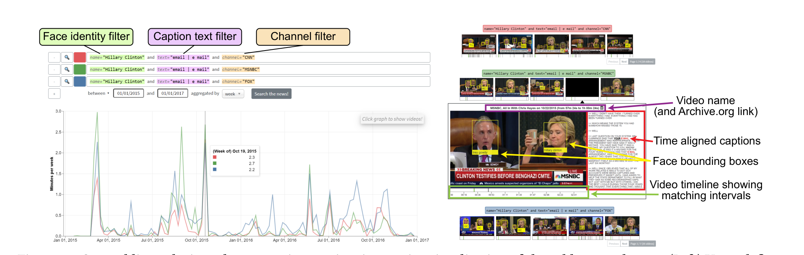
Hong et al. (2021), Figure 13.
The Analyzer measures who is visible, not who is speaking or what position the person expresses.
A CF score measures donation behavior, not what a person says during a broadcast.
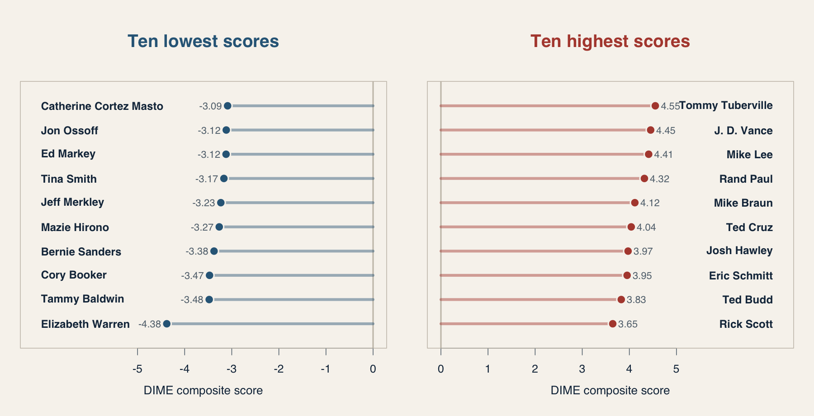
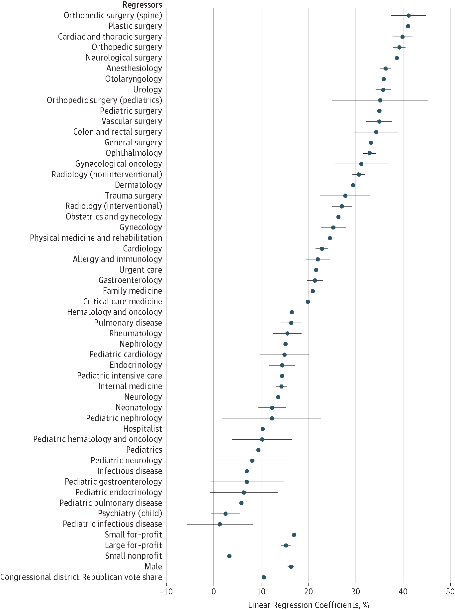
| Person | CF score | Screen time | Weighted contribution |
|---|---|---|---|
| Guest A | −1.0 | 120 sec | −120 |
| Guest B | +0.5 | 240 sec | +120 |
| Guest C | +1.5 | 60 sec | +90 |
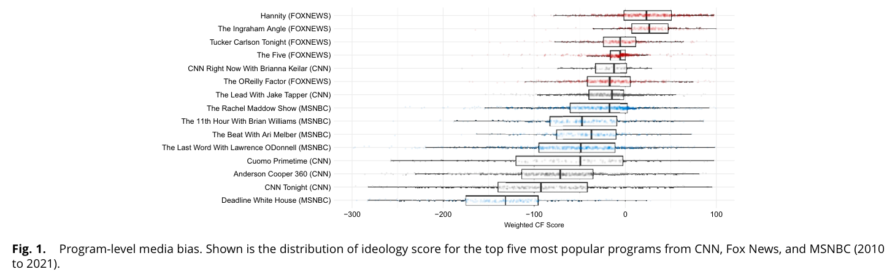
Face validity
Fox averages right of CNN and MSNBC.
Criterion evidence
Correlation with human-coded slant: r = .72
Convergent evidence
Correlation with a text measure: r = .59
What would count as discriminant evidence?
Three forms we will use:
Indicator
one meaningful dimension
Typology
crisp, mutually exclusive, exhaustive categories
Association
probabilistic patterns across variables, units, or time
| Form | Question | Claim you can make |
|---|---|---|
| indicator | How much of one attribute does a population or case have? | “Outlet A’s visibility score averages −1.2.” |
| typology | What distinct kinds of cases result from explicit classification rules? | “Political activists fall into four types based on repertoire and commitment.” |
| association | How do indicators or units vary together? | “Channel distance increases over time,” or “slant and audience partisanship covary.” |
Claim form: Among population \(P\), the level or distribution of attribute \(X\) is __________.
Media-bias example: “During the study period, Fox’s mean guest-visibility score is higher than CNN’s.”
This permits: a statement about level, prevalence, rank, or distribution on one conceptually meaningful dimension.
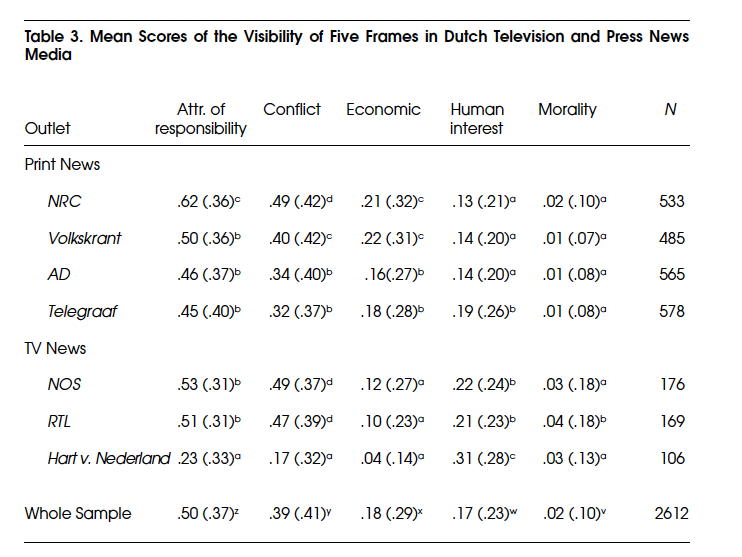
Claim form: Cases belong to distinct categories using one uniform classification rule.
| Category | Classification rule |
|---|---|
| Supported | Available evidence supports the central factual claim |
| Contradicted | Available evidence contradicts the central factual claim |
| Unresolved | Available evidence is insufficient or genuinely contested |
Claim permitted: “Each assessed claim receives one verdict based on its evidentiary status.”
A matrix typology crosses two or more classification dimensions.
| Dimension B: absent | Dimension B: present | |
|---|---|---|
| Dimension A: absent | Type 1 | Type 2 |
| Dimension A: present | Type 3 | Type 4 |
Each dimension needs a rule
How do we determine whether the attribute is present?
Each cell becomes a type
What distinguishes this combination from the other combinations?
Every case needs a destination
Are the resulting cells mutually exclusive and exhaustive?
| No misinformation | Misinformation present | |
|---|---|---|
| No systematic partisan bias | fact-based, nonpartisan reporting | nonpartisan misinformation |
| Systematic partisan bias | accurate partisan slant | partisan misinformation |
Claim: “Coverage can be classified by whether it systematically advantages a political side and whether it contains false or misleading factual claims.”
Dimension C: Is the source or sponsor disclosed?
Source disclosed
| No misinformation | Misinformation | |
|---|---|---|
| No partisan bias | transparent factual report | attributable error |
| Partisan bias | disclosed advocacy | attributable partisan misinformation |
Source concealed
| No misinformation | Misinformation | |
|---|---|---|
| No partisan bias | anonymous factual report | anonymous misinformation |
| Partisan bias | covert advocacy | covert partisan misinformation |
Three binary dimensions produce \(2 \times 2 \times 2 = 8\) logically possible types.
| Subtype | Explicit claim form | Media example |
|---|---|---|
| trend | \(X\) changes with time | “The Fox–MSNBC distance increases after 2018.” |
| network | ties among units form pattern \(N\) | “Political links cluster into two weakly connected communities.” |
| correlation | \(X\) and \(Y\) vary together | “More partisan audiences accompany more partisan guest visibility.” |
This permits: a claim about patterned dependence, including its direction, size, timing, or structure.
This does not permit: a claim that \(X\) causes \(Y\), that \(Y\) causes \(X\), or that a third factor does not produce both.
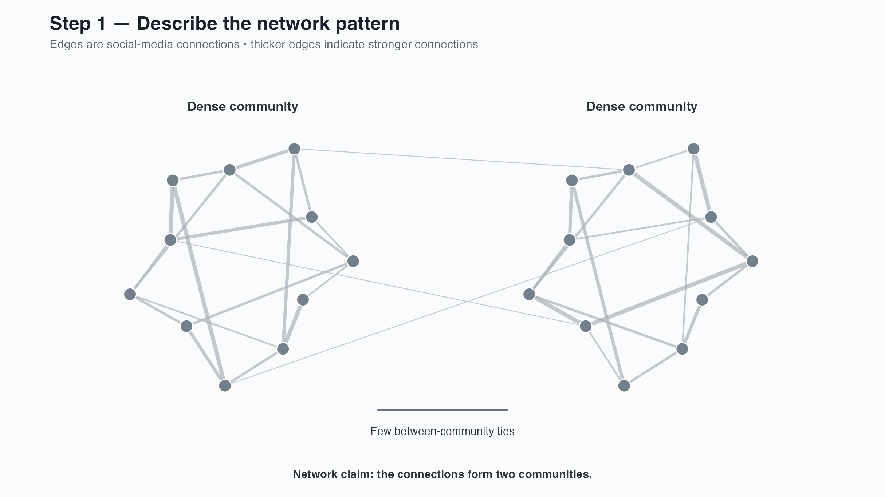
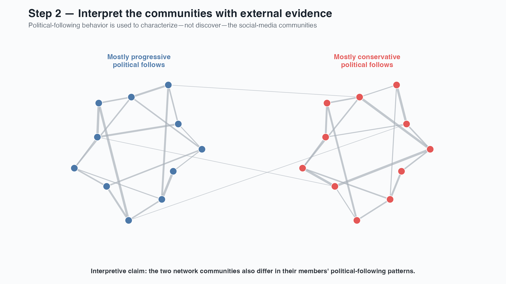
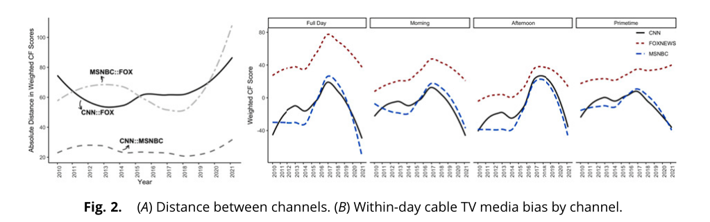
Indicator, typology, or association
What kind of conclusion should the evidence support?
Counts, distributions, transformations, centers, and spreads
Which feature of the indicator must the summary preserve?
Choose the claim before choosing the statistic or graph.
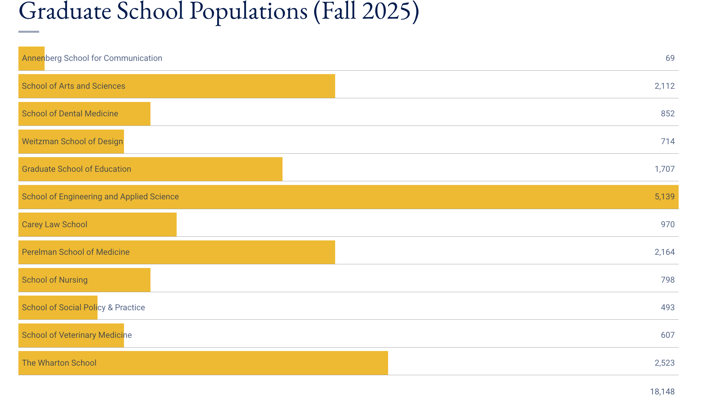
For weekly visibility scores, inspect:
Shape
Symmetric, skewed, multimodal, bounded?
Center
Mean, median, mode, or a substantive reference point?
Spread
Range, IQR, standard deviation, or quantiles?
Never choose a summary before looking at the distribution.
Seven ideology scores, ordered from liberal to conservative:
−3 −1 −1 0 1 1 3
\[ \bar{x}=\frac{1}{n}\sum_{i=1}^{n}x_i =\frac{-3-1-1+0+1+1+3}{7}=0 \]
The mean is the balance point of all observed scores.
For ordered values \(x_{(1)}\leq x_{(2)}\leq\cdots\leq x_{(n)}\):
\[ \tilde{x}=\begin{cases} x_{((n+1)/2)}, & n\text{ odd}\\ \dfrac{x_{(n/2)}+x_{(n/2+1)}}{2}, & n\text{ even} \end{cases} \]
Here: \(\tilde{x}=x_{(4)}=0\)
\[ \operatorname{mode}(x)= \underset{v}{\arg\max}\;\#\{i:x_i=v\} \]
Here: modes = −1 and +1
Mean ideology = 0, so each deviation equals the original score:
| Score | −3 | −1 | −1 | 0 | 1 | 1 | 3 |
|---|---|---|---|---|---|---|---|
| Distance from mean | −3 | −1 | −1 | 0 | 1 | 1 | 3 |
| Squared distance | 9 | 1 | 1 | 0 | 1 | 1 | 9 |
\[ \sigma^2=\frac{1}{N}\sum_{i=1}^{N}(x_i-\mu)^2 =\frac{22}{7}=3.14 \]
Average squared distance from the mean.
\[ \sigma=\sqrt{\sigma^2}=\sqrt{3.14}=1.77 \]
Typical distance from the mean, expressed in the original units.
\[ \mu=\frac{1}{N}\sum_{i=1}^{N}x_i \]
\[ \sigma^2=\frac{1}{N}\sum_{i=1}^{N}(x_i-\mu)^2 \qquad \sigma=\sqrt{\sigma^2} \]
\[ \bar{x}=\frac{1}{n}\sum_{i=1}^{n}x_i \]
\[ s^2=\frac{1}{n-1}\sum_{i=1}^{n}(x_i-\bar{x})^2 \qquad s=\sqrt{s^2} \]
\(n-1\) corrects the tendency of a sample to underestimate population spread.
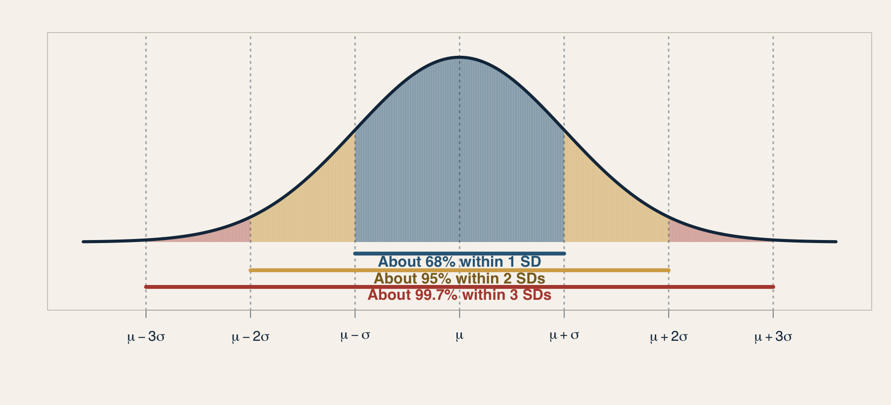
\[ P(\mu-\sigma\leq X\leq\mu+\sigma)\approx .68 \qquad P(\mu-2\sigma\leq X\leq\mu+2\sigma)\approx .95 \]
The 68–95–99.7 rule applies when the population is approximately normal.
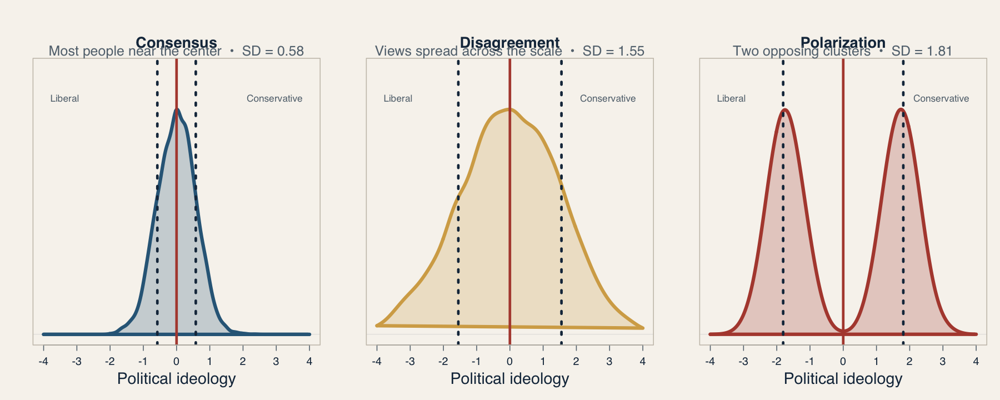
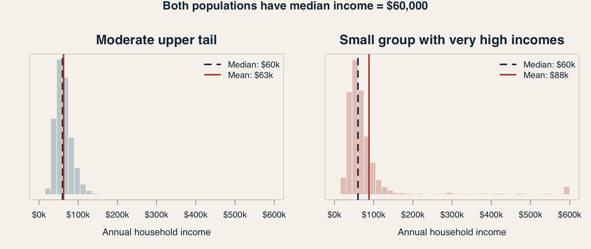
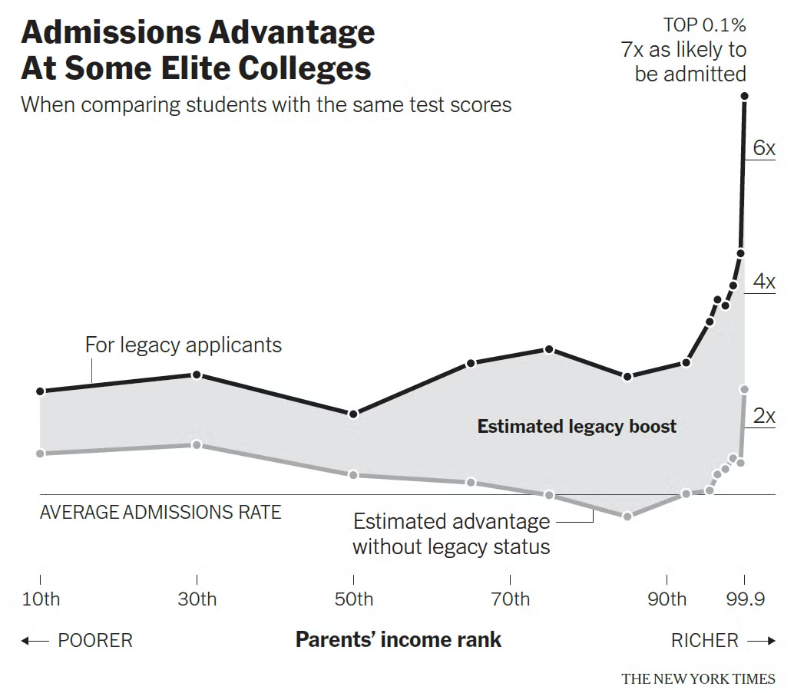
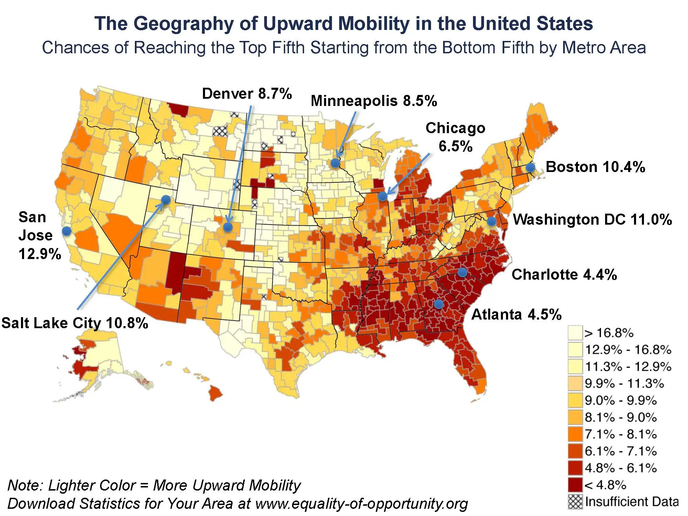
The interactive follows children from similar-income families and compares adult outcomes across race and gender.
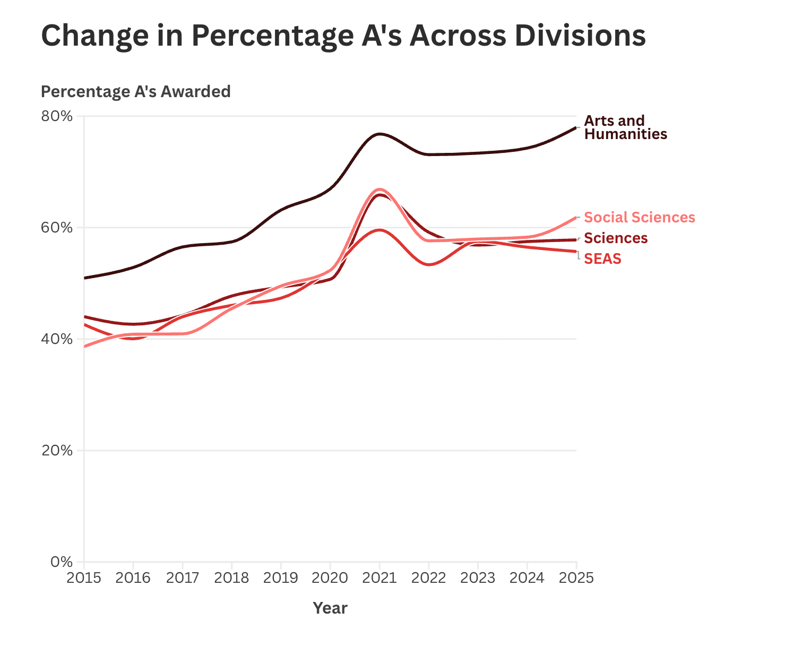
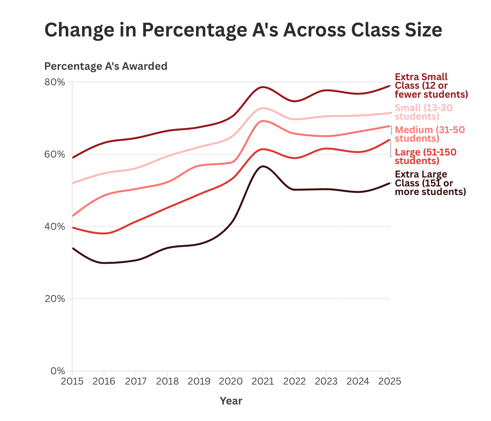
Classify each claim, then remove any causal overreach:
Use your research topic to draft all three forms.
Gerring: choose the form of claim
Indicator, typology, or association?
Kim and Semetko–Valkenburg: operationalize it
What observations, coding rules, categories, or scores would represent the concept?
Huntington-Klein: describe the resulting data
What comparison, distribution, or visualization would reveal the pattern?
Then bound the claim
For which units, settings, and period should it hold—and what does it not establish?
Scope conditions specify where, when, and for whom a claim is expected to apply—and where it may not.
Claim:
I will make an indicator claim about __________ among __________.
I will do this by:
Observing __________, operationalizing the concept as __________, and summarizing its level or distribution using __________.
Claim I could make:
Among __________, the level / prevalence / distribution of __________ is __________.
Scope conditions:
This applies to __________ during __________; it does not necessarily apply to __________ and does not establish __________.
Claim:
I will make a typological claim about __________.
I will do this by:
Classifying __________ into __________ using the rule(s) __________.
Claim I could make:
The cases consist of the following distinct types: __________.
Scope conditions:
These categories apply to __________; ambiguous cases are handled by __________, and the classification does not establish __________.
Claim:
I will make an associational claim about how __________ varies with / across / over __________.
I will do this by:
Measuring __________ and __________ for each __________, then displaying their relationship using __________.
Claim I could make:
Within __________, __________ tends to increase / decrease / cluster / change with __________.
Scope conditions:
The relationship is described for __________ during __________; it does not establish causal direction, rule out __________, or necessarily generalize to __________.
Conceptual fit
The measure represents the stated concept.
Revealing summary
The display preserves the distributional feature that matters.
Disciplined claim
The conclusion stays within the population, measure, and design.
COMM 5220 • Week 7